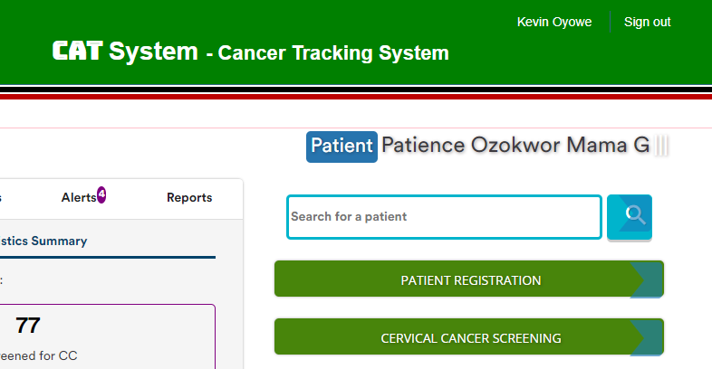
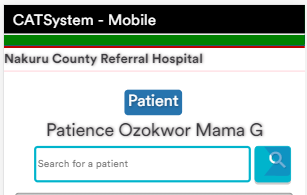
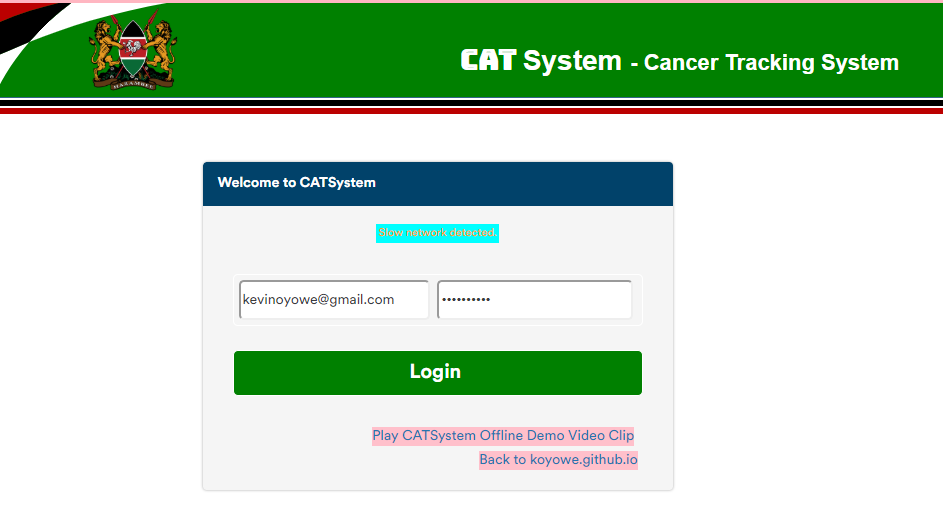
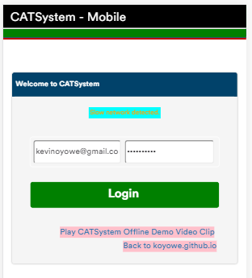
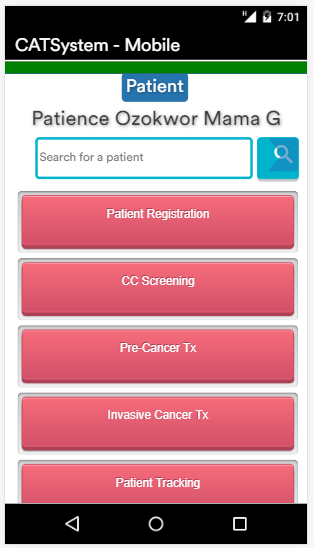

January - March 2019
Mar 6, 2019 - CATSystem Project Blog
The CATSystem project blog is launched by Kevin Oyowe in order to make it easy for the project team members to follow the project events.
Mar 3, 2019 - Patient Search
The patient name bar will hold the [patient name] or [patient Id] of the current patient we are working on while the search bar allows you to search for another patient.
 
Mar 2, 2019 - Network Optimization
When on a slow network, the system will skip loading of some background images in order to optimize network resources and load pages faster. This same technique is deployed when the system detects it's being used on a mobile device.
 
Mar 1, 2019 - CATSystem Mobile
Design changes to accomodate situations where the app is used on mobile devices. This was done to improve the mobile User Interface, and bring the experience as close as possible to that of Android or IOS apps.

Feb 21, 2019 - Offline Functionality to the WebApp
This is expected to be an extremely useful technology for the Cancer Tracking Project. The offline functionality will be added through the use of Progressive Web Apps (PWA) technology. It makes the app capable of working completely offline and on a number of devices including Computers, Tablets, and Mobile phones.
In addition, the app is capable of installing itself on all these devices and will operate more like an Android or IOS native app, while on the Windows computers it is capable of running like a Windows app.
Feb 12, 2019 - The First Cervical Cancer Screening Form
We wanted to build a form that resembles the hard copy cervical cancer screening form as closely as possible. A PDF version of the form can be found from the Ministry of Medical Services online portal at Cervical Cancer Screening Form - K4Health and is the same copy used at Nakuru PGH.
Feb 9, 2019 - The First Team Meeting
Members of the CATSystem project met at Nakuru County Referral Hospital (formerly Nakuru PGH) to break the ice and meet with various stakeholders on the ground.
CATSystem was first presented here. Among the presenters on that day were Kevin Oyowe and George Bush Odhiambo.